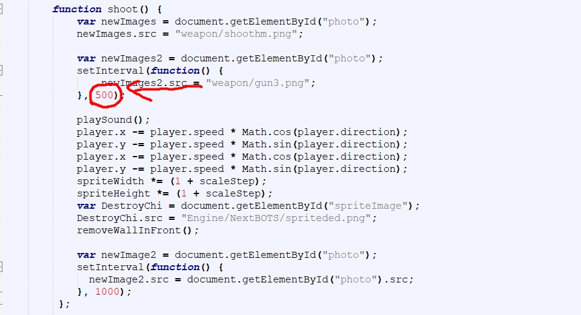

Hello everyone! After reading this documentation you will be able to create your own mods for CF and other games on the Zrozumilo Engine!
I think it's worth starting with the simplest thing, with replacing the sound! Go to the game folder, then engine/assets and there are sounds and music, delete the file with the sound that we want to replace, but copy the name and paste the sound we need, changing its name to the name of the previous sound.
Everything here is also approximately simple, in the weapon folder there is a file gun3.png and shootm.png, just like with sounds, you simply replace the file with the desired one BUT the sprite resolution must be 1500 x 600 px.
With other sprites, everything is the same and most often they are located in the /Weapon folder, but there are exceptions, for example, mobs like the green chicken are located in the Engine/NextBOTS path, and their size in pixels is different.
And here everything is more complicated, we open the file "vedropc" through any code editor or even the most ordinary notepad, find the line "shoot()" and below it the line "500", this is the shooting speed and you can increase it by making it 1000 or 2000.
